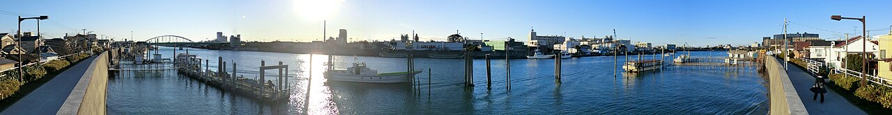
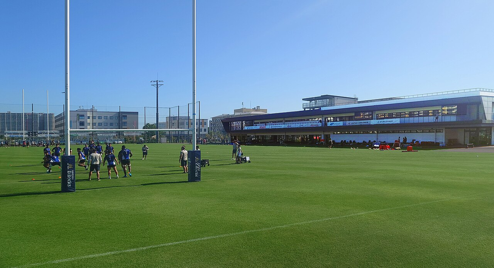
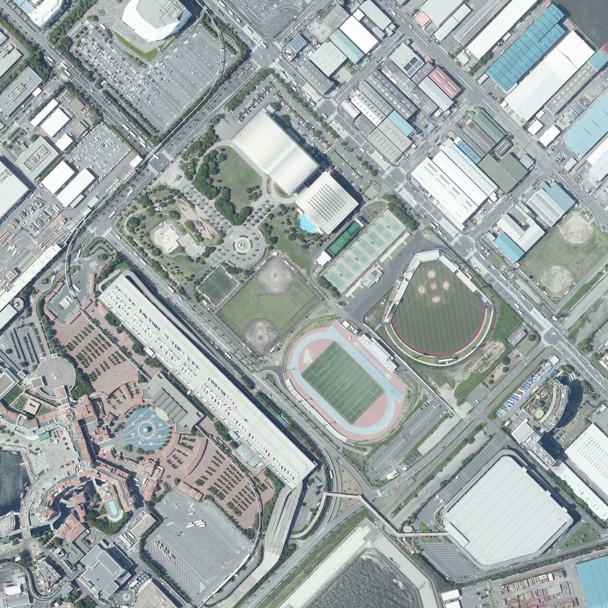
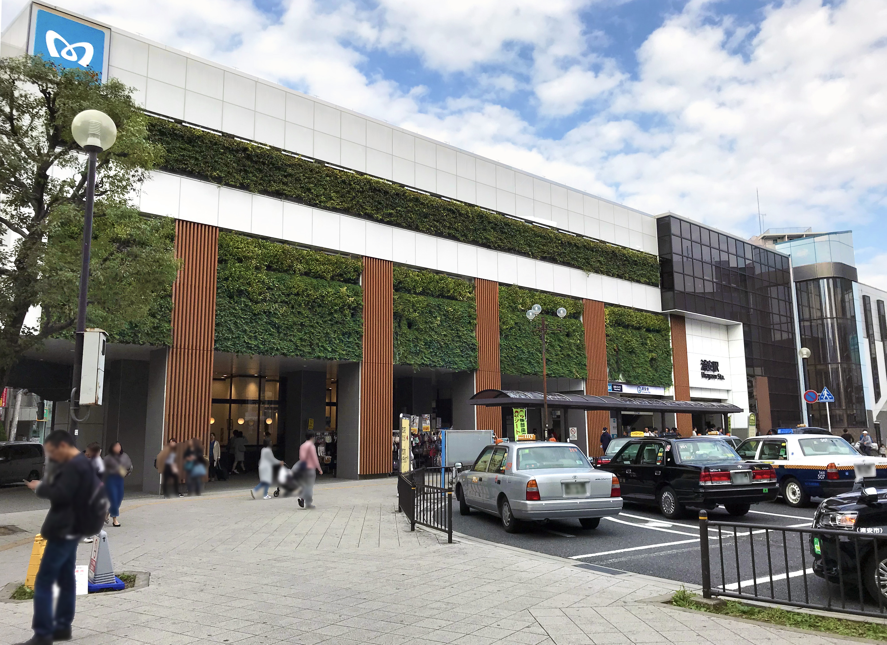
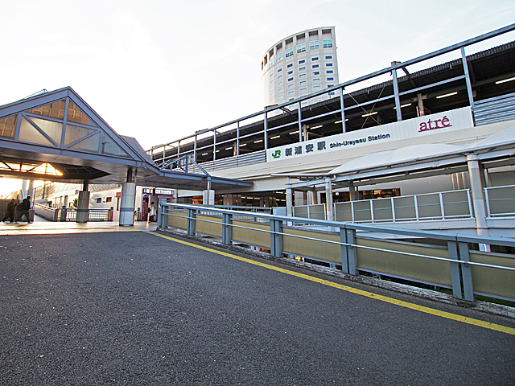
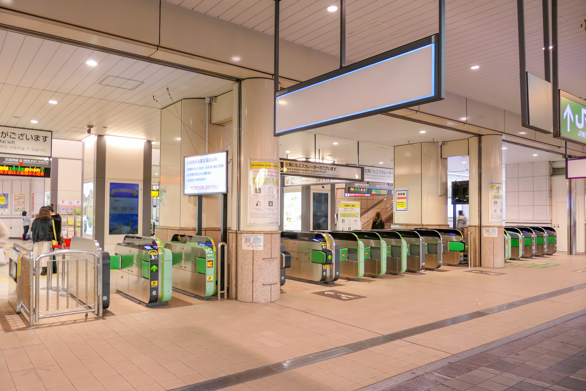

市立小・中学校
26校
小学校17校・中学校9校
PHOTO · URAYASU
川辺や公園の写真から、浦安のまちの表情をご紹介します。






市立小・中学校
26校
小学校17校・中学校9校
公園
133か所
2025年3月31日現在
図書館
8拠点
中央図書館・7分館
おさんぽバス
3路線
市のコミュニティバス
01 · LEARNING
市立小学校17校・市立中学校9校。下の数は市立小・中学校を対象としており、高校・私立校を含みません。
学校数の参考：浦安市統計書（令和7年版）および市の学校紹介ページ。
02 · PARKS
市内の公園は133か所。公園の種類別の数と、統計書に掲載された面積を紹介します。
PARKS IN URAYASU
133か所
2025年3月31日現在。園数は浦安市統計書の分類によります。
03 · PUBLIC FACILITIES
文化・教育、スポーツ、子育て、保健・福祉など、目的に合わせた公共施設が市内にあります。
BOOKS · 学び
8拠点
中央図書館と7つの分館。
COMMUNITY · 地域
7館
高洲・中央・堀江・富岡・美浜・当代島・日の出。
SPORTS · 健康
総合体育館、武道館、プール、陸上競技場、テニスコート、野球場など。
スポーツ施設一覧 ↗CHILD & CARE · 暮らし
子育て・青少年施設、幼稚園・保育園、保健・福祉施設を探せます。
市の施設案内 ↗MAP · FIND
公式マップで場所を確認。公民館などは公共施設予約システムも利用できます。
地図から探す ↗GREEN · 屋外
公園のほか、しおかぜ緑道や船圦緑道などの施設情報も公開されています。
公園・緑道の案内 ↗04 · EVERYDAY LIFE
市内を走る路線バス、鉄道駅、コミュニティバスの概要と、生活を支える公共下水道の情報です。
3路線
医療センター線・舞浜線・じゅんかい線を運行。1回100円で、未就学児・小学生は無料です。
市公式の路線図・時刻表 ↗市内では新浦安駅・舞浜駅や市役所周辺を結ぶ路線バスが運行しています。6系統「市役所線」など、路線・運行状況は公式案内で確認できます。
路線・時刻表・運賃を検索 ↗市内の駅は、東京メトロ東西線の浦安駅、JR京葉線の新浦安駅・舞浜駅。都心方面や千葉方面への移動に利用できます。
東京メトロ浦安駅 ↗99.8%
行政人口のうち処理区域内人口が占める割合。処理区域内人口の水洗化率は98.3%です（2026年3月末現在）。
普及状況の詳細 ↗バスの運賃・時刻表・運行状況、電車の時刻は変更されることがあります。ご利用前に各社の最新情報をご確認ください。
05 · CHILD & FAMILY
妊娠・出産から未就学児の保育、小学生の放課後まで、浦安市の相談先や支援制度をまとめました。
PRESCHOOL · 保育・教育
市内の園の一覧に加え、入園案内や申請、保育施設の空き状況を市のページで確認できます。
市内の園を探す ↗PARENT & CHILD · 相談・交流
市内在住の0歳から未就学児と保護者が対象。親子の交流、子育て相談、情報提供や催しを行っています。
利用案内・場所を確認 ↗AFTER SCHOOL · 放課後
保護者が就労などで昼間家庭にいない小学生を対象に、放課後や夏休みなどの生活を支援します。
入会手続き・案内 ↗FAMILY SUPPORT · 預かり
一時預かり、病児・病後児保育、ファミリー・サポート・センターなどの支援があります。
預かり・訪問支援の案内 ↗HEALTH & BENEFITS · 健康・助成
妊娠・出産後の支援、児童手当、子ども医療費助成、予防接種などの情報を確認できます。
子育て・教育の総合案内 ↗申請条件、利用料金、空き状況、施設の場所・開所時間は変更される場合があります。ご利用前にリンク先の浦安市公式情報をご確認ください。
06 · ENVIRONMENT
身近な緑に加え、境川の水辺を自然・歴史・交流の場として活用する取り組みが進められています。
2025年4月に始まった5カ年計画。水・自然環境、歴史・文化、水辺利用を柱に、市役所前の親水テラス整備などに取り組んでいます。
公園面積と1人当たりの公園面積は浦安市統計書（令和7年版、2025年3月31日現在）を参照。
数値は項目ごとの基準日時点。施設の利用条件は各公式ページをご確認ください。